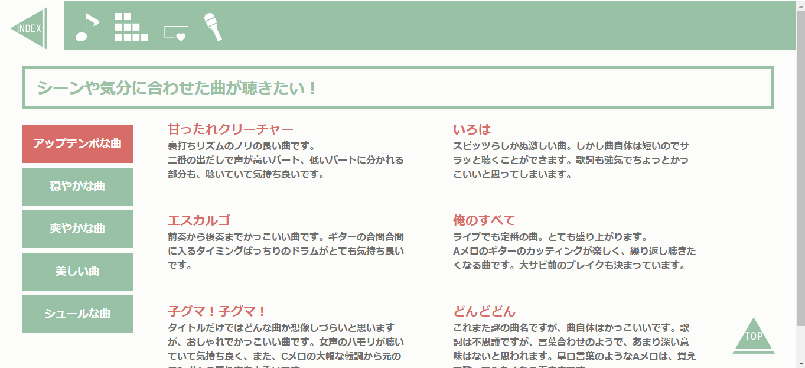
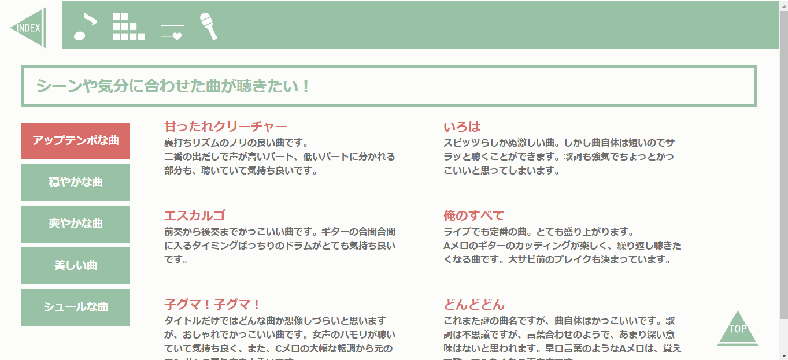

サンプルページ1(トップ)

サンプルページ2

サンプルページ1(トップ)
サンプルページ2

職業訓練校の課題にて制作したWEBサイトです。
まずは自分の作りやすいジャンルでいこうと思い、大好きなスピッツというバンドのファンサイトを制作しました。
ファンサイトと言っても、昨今はツイッターなどのSNSでファン同士の交流は盛んに行えるので、「スピッツのことを気になっているけれど、どの曲から聴けばいいか分からない」というライトな層に向けて、”一目で自分が求める曲を選べるようなサイト”を目指しました。
色合いはスピッツの「爽やか」「優しい」「透明感」のイメージから、アクアグリーンをメインカラーにしました。
2019年3月
使用エディタ：サクラエディタ
アイコン作成やTOP画像加工に使用したソフト：Illustrator、Photoshop